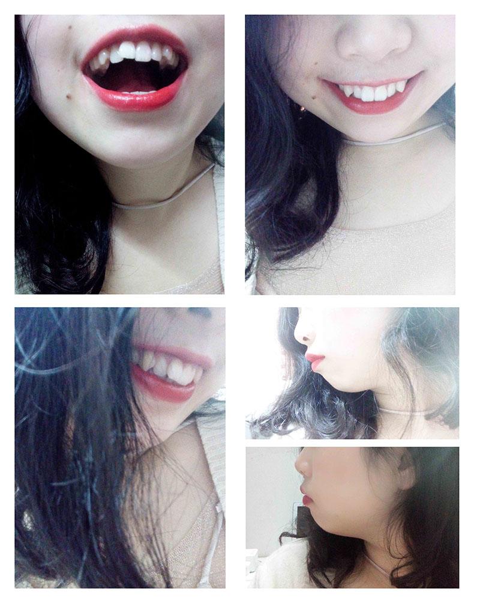
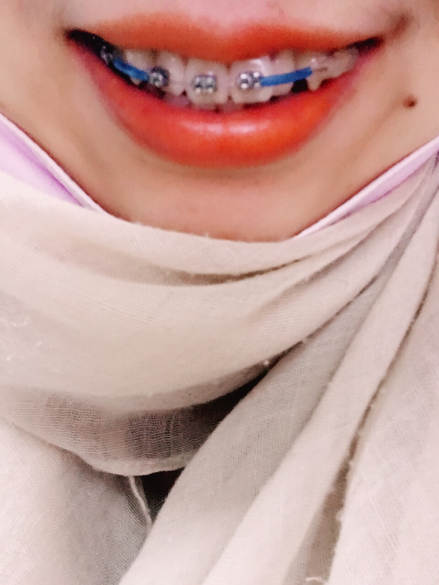
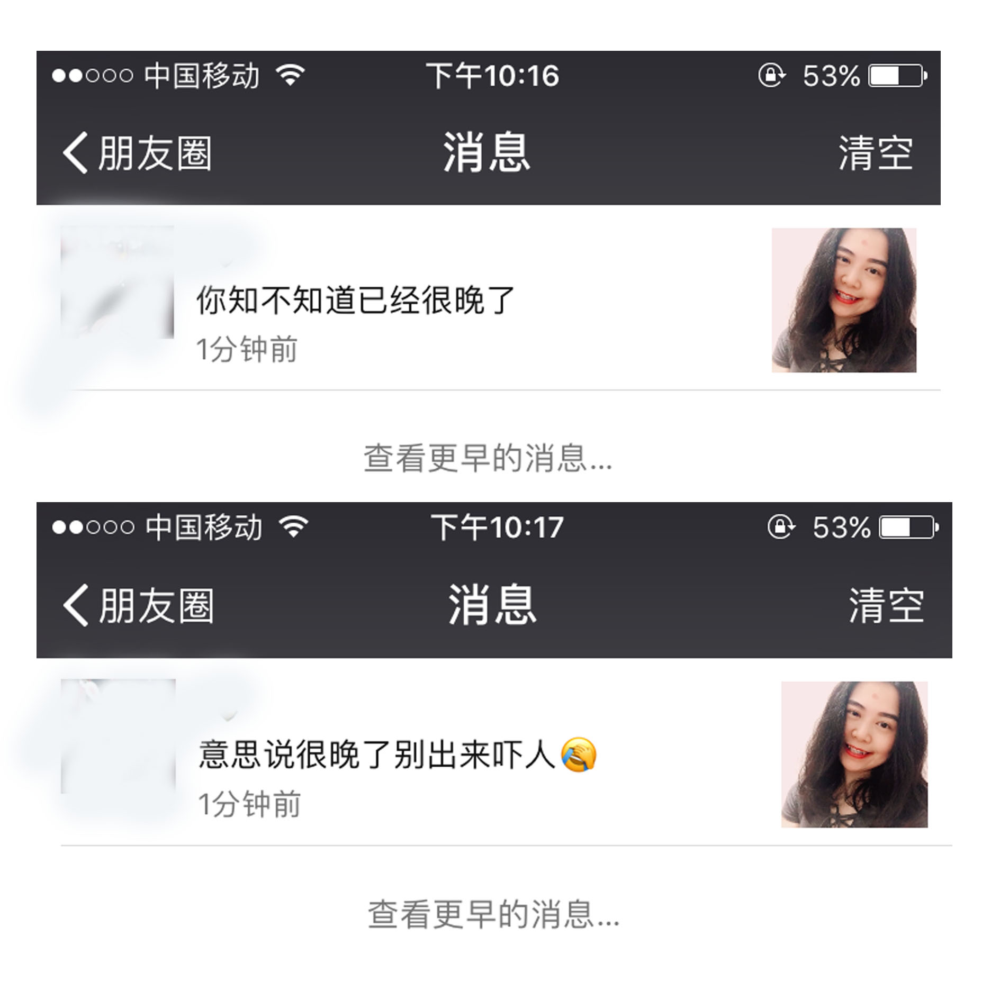
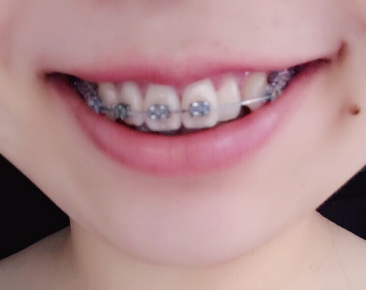
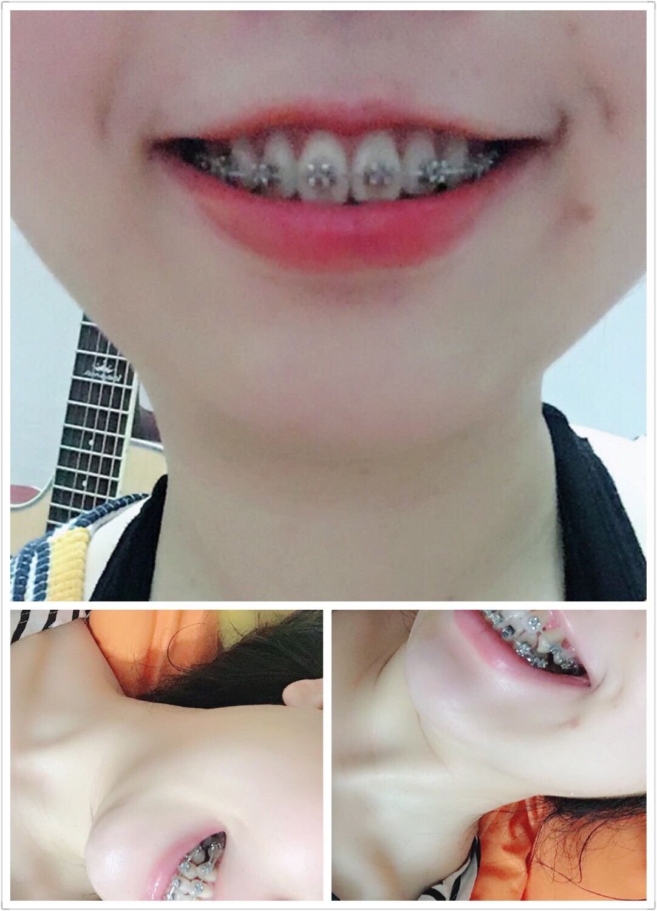
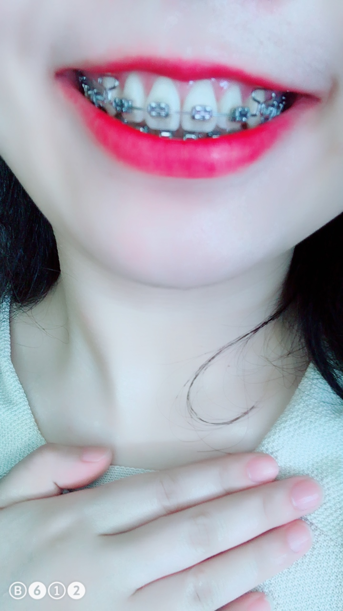

2017年2月17号打了个电话给牙医就兴冲冲的去了
一个早上拍完片，咬完牙膜，现在等方案中
不知道有没有92年的朋友，现在是24周岁一般说25了，但老家这边算26。
带牙套这件事思想斗争了很久！我相信每个成年带牙套的都一样，但最后在纠结中还是去了。。。
我的医生是堂姐介绍的，她有个同事在我这个年纪去戴牙套现在已经快拆了，因为身边戴牙套的人特别的少，没法什么货比三家就很冲动的去了。
先说一下我的情况，朋友都说可爱的的虎牙我是可以接受的下排牙齿是齐的就是里面有两个大牙往里凹但也看不见，主要是我有一个门牙被挤歪了，正面其实还好侧面特别明显，我印象小时候并没有这么明显就是出来一点点，越长大越歪，还有从侧面看我的上颌突出，下巴内缩，没有曲线，可能现在肉还比较多，大家也没多觉得。。
印象说我牙齿坏话的比较少，能记起来的就两次，一次是和闺蜜一起的时候，有点忘了，大概是她男朋友一直嫌弃她的牙不好看，见我之后跟她说我牙也不好看，最后总结一句：你们潮汕人怎么牙都那么丑啊！！还有一次过年去二伯那里做客，我二伯母不经意的一句：妹的牙可以去箍一下。。。（这个应该是建议不是坏话）
说到箍牙还是很怕的，我怕我下排牙齿又长又薄会不会容易出现黑三角牙龈萎缩？！我特别害怕，还有害怕拔牙会有多痛呢？！得不到家人的支持自己难道真的要承受这么多？
2月20号上午，医生给我讲了大致方案：先箍上牙，因为牙比较紧要箍松，20几天后再拔牙，上面拔两个4下面拔两个五，上面给门牙腾出空间，下面给凹进去的6号牙腾出空间。。
后天可以开始，来得太突然就像龙卷风，没有一点点防备。。。
2月22号上午9.30-10.30——戴上了牙套。首先医生很随便的清洗了一下牙结石没什么感觉，然后就拍牙齿的面部的各种照片，接着给上牙戴上了牙套，左边的虎牙和右边的二号牙没粘托槽，托槽只粘到6号牙，目前没有什么感觉，就是觉得前面好凸擦口红完全没办法抿嘴唇！！！要用手涂均匀。。。然后过20几天开始拔牙。。。
回家被挨个批斗了，特别我爸爸一顿骂和恐吓，我静静地端着饭碗去客厅吃饭没敢吭声，我妈妈倒是异常冷静，一回来跟他们说我去做了，我妈妈还让我张开嘴巴给她看看，我爸爸直接就怒了的，等爸爸说出门透透气去，这时我妈才开始说我为什么不等以后结婚生孩子后再去？？。。。妈妈对这个新武器并没有太大的反感，还问我有没有需要忌口的，为了不让她担心我说没有，于是第一天就啃米饭了。。。接下来还有要挑半天鱼骨的鱼还有非常有韧性的猪大肠，都照样吃了。。。
宝宝心里苦，但宝宝理解她们，苦自己吃了。。。
大概她们就是觉得本来好好的，偏要带着个牙套这么丑，把钱花在看不见的地方，相亲是没指望的了，今年又嫁不出去了。。。但我想我已经单身了25年了带不带也是没男友。。。
可能我的牙套还没施力，吃饭正常但速度比较慢，吃完钢线上挂着的东西多到可以再泡一碗汤了。。。慢慢也就习惯了。
我爸爸到现在还不和我说话。。。好执拗的老头。。。
看了好多这里的案例才发现一年多矫正完的都是不用拔牙的，我本来预估一年半，现在想想是自己太天真了。。。有种要奔溃大哭的感觉！两年甚至更多觉得有点难以接受啊，现在是上了贼船下不来了。。。
问了医生这周可以拔牙么？医生说下周等通知。。。等得有点心慌慌了时间好漫长啊。。。而且最近门牙旁边被挤进去的那个牙越来越近去很容易磕到有点痛！
3月6号第一次拔牙——拔了右边第四颗牙,恐惧多过痛苦，可能现在麻药劲还没过，还没有感受到疼，拔牙很快，前前后后5分钟左右，医生先把钢线拆了然后打针，我很紧张，全身抖嘴唇也在抖，拔的过程感觉整个牙床都要崩了，那一刻开始有强烈的后悔感，我为什么要经历这些？？不想再回忆了，并不想再经历一次啊。。。半个小时之后再上了钢线！回来各种血流不止~到现在还是各种忐忑不安！中午吃粥仰着头喂自己，然后吃消炎药然后睡觉，拔完牙有一天不用刷牙的福利。。。晚上正常吃，还忍不住吃了宵夜。睡一觉隔天就好了，早上小心翼翼的刷牙，然后整天都在吸口水毕竟现在有洞漏风。。。
3月12日第二次拔牙－拔了左边第四颗牙。
3月19日第三次拔牙——拔了左边5号下牙，隐隐作痛中。。。我发现门牙旁边被挤进去的那颗牙变了颜色，黄黄的，不知道问什么，我很郁闷，是因为之前受力疼到变色？？太伤心了！
戴上牙套后我偶尔总会在深夜发发照片，等会儿删看看大家什么反应，然后。。。
我已经屏蔽了这个人。。。
3月26号——例假不能拔牙，有点伤心。 跟医生说了最近门牙右旁被挤进去的牙有点痛，他说过去给他看看，说是没什么还没上托槽怎么会疼呢可能我的牙比较敏感，然后就拆了钢线，顺便把门牙左边的虎牙上了托槽，然后右边的虎牙上了不知道什么东西形状也不像皮筋，一个圈一个圈的透明弹性的皮筋？？把右边的虎牙往里拉一拉，给疼的那颗牙缓一缓。结束后坐着闲聊，聊到中国纠正先驱人士－陈启锋，我现在用的这套就是陈氏活动翼，这套活动翼大大缩减了纠正的时间到1-2年，但主要也要看个人骨头的情况，医生说2007年去跟他学习的，说陈真的是一个奇才，在什么条件都没有的情况下，当时他的好友一外科医师把牙齿不整齐的小孩托付给他，并帮助他买了一系列工具，在条件不足的情况下把纠正做得很好，朋友鼓励他一定要继续研究正畸。医生说他见过刚来咨询时一脸丧气的患者，一口不好的牙真的给她们的生活带去很多的阴霾，正畸能给他们一个灿烂的笑容更重要的是带来对生活对自己的自信，整个精神面貌都焕然一新。
4月2日第四次拔牙——拔了右下5号牙，最后一颗了，拔牙结束。这个牙拔得比较不易和之前的比起来，两天了还有痛感。想哭。
4月9日带上下牙的牙套。现在算是带上全口的了，在诊所意外遇见堂姐的同事过来摘牙套，之前在微信上聊了挺多，见面还是有聊不完的话题，排到她的时候太晚了，没看到她摘下牙套的样子，可是带着的时候也是挺好看的了。
这次同样是先洗牙再戴牙套，和上牙一样只带到6号牙，带完不知道怎么笑，因为会露出一整套牙。。。之前说门牙旁边被挤到的那颗牙变色了很担心怀疑病变了！我把这个困扰跟牙医的女助理说了一下，她说可能是那颗牙没上托槽，被钢线挡住了清理不到位，然后帮我洗了一下，神奇的黄黄的印不见了，我大笑自己好蠢啊哈哈哈～以后要特别刷一下了！这颗牙为什么还不能上托槽呢，女助理说要等挂着皮筋的隔壁虎牙往里面移，移到有缝隙了才能把这颗牙拉出来。现在回到家感觉中间下牙牙龈有点点痛可能是牙结石被清理了刺痛刺痛的。。
牙医吩咐三个星期后再过来，好久啊！
4月10号晚上吃牛肉鱼肉，掉了下牙最里面两个6号牙托槽，11号早上去粘，12号中午吃薯片掉了左边下牙6号牙托槽，下午跑去粘了，我真的没啃骨头啊对自己好无语哦，不敢再掉了难道天天吃豆腐？问了女助理说我后牙咬合太紧了，之前粘的位置可能没弄好。
现在开始有种厌恶这个钢架，整天异物感强烈，好想用舌头把他撬开。。。真的好想解放啊！这还不到两个月呢。。。
4月30日——第一次复诊，去之前完全感觉没毛变化啊，医生说对比牙膜就知道了，左边突出的虎牙走得快已经和其他牙一样平了，右边的虎牙还要走一段时间，到有缝隙了才能给旁边的牙上托槽，这样才不会牙凸才可以往内收一些，然后这次复诊给右边的虎牙换了新皮筋左边的虎牙也上了皮筋都是往两边拉，疼痛感还好有一点点回来正常吃饭。然后回家看着左边的虎牙一直傻笑，真的进去了耶。。。复诊真的好快啊！下次复诊是四个星期后。。。
5月28日——第二次复诊，超快！就换了那两根橡皮筋，然后就没然后了。。。
我问小助理为什么还不给右边的上面二号牙粘托槽，她说还得再走一走，虎牙和二号牙之间虽然有了明显的空隙可是2号牙还是被门牙挡住了，虽然没粘托槽，可是这个牙也是会随着移动的，一个月后再换钢丝。哦，对了下面的四号牙也出现了明显的缝隙。
6月25号 第三次复诊。算是齐了，给上牙的二号牙上了拖槽了，换了钢丝和橡皮筋，因为下牙往左偏了，所以下牙三号和四号牙之间的钢丝上加了牵引勾，医生在处理下牙的时候不小心把右边的二号牙托槽给弄出来了，好郁闷哪。。。因为掉了的托槽需要用酒精烧和处理干净表面的胶再重新粘上，处理后的托槽是黑的！黑的！
7月27号，第四次复诊。本来只是需要在下牙的最里面那个托槽和牵引钩上套橡皮圈，结果医生不小心把下牙右边的最里面的那个托槽弄掉了又得换钢丝了。给了一包小狐狸的橡皮圈自己每天给下牙套上， 开始不知道怎么套，但很快就上手了。
最近见了一些朋友，因为身边很多朋友都做了老师，所以她们开始放暑假了，这是戴牙套之后第一次见那么多熟悉的朋友，昨晚那个还说我以前突出的虎牙很可爱。。。
最近，关于牙套脸，正面看好像有一点侧边还是像包子脸，但我本身太阳穴那边就不饱满，这个锅牙套不背
8月20号，第五次复诊。医生把上牙固定的橡皮筋拆出来剪掉一点又挂上去，下牙继续自己换。
9月17号，第六次复诊。医生说我下牙收得特别快，出乎意料，所以继续戴橡皮筋，上牙钢线拆了医生在新的钢线上扭了两个有形状的东西，小助理说用来平衡的，是什么我忘了哈哈哈反正回来就是一副生无可恋的模样，虎牙好酸痛啊！
问了一下小助理，那个东西叫做T型曲，用来内收门牙和平衡前牙和后牙的关系，之后会用来套橡皮筋。
我还问了一下小美女，下牙凹进去的大牙是要后面才扶正么，因为一直没变化，小助理说其实现在在套的橡皮筋就有扶正的作用只是大牙见效慢，要比较久的时间！